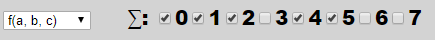
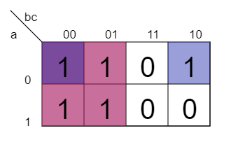

Logische Funktionen können darüber definiert werden, in welchen Fällen die Funktion 1 zurückliefert: (Eingaben: a,b,c | Ausgabe: y)
| a | b | c | y = | |
| 0 | 0 | 0 | 0 | 1 |
| 1 | 0 | 0 | 1 | 1 |
| 2 | 0 | 1 | 0 | 1 |
| 3 | 0 | 1 | 1 | 0 |
| 4 | 1 | 0 | 0 | 1 |
| 5 | 1 | 0 | 1 | 1 |
| 6 | 1 | 1 | 0 | 0 |
| 7 | 1 | 1 | 1 | 0 |
Dies kann zusammengefasst werden zu: f(a,b,c)= ∑(0,2,4,6)
In genau diesem Format können logische Funktionen in den Schaltplangenerator eingegeben werden.
Bestandteile des Schaltplangenerators
DNF:
Überführung in die disjunktive Normalform: y = a'b'c' + a'b'c + a'bc' + ab'c' + ab'c(a' ≙ ¬a ≙ Negation von a)
DNF-Schaltplan
Erzeugen eines Schaltplanes aus der DNF(• ≙ NOT-Gate)
KV-Diagramm
Minimierung der DNF mittels KV-Diagramm(Eine Gruppe ist durch eine zufällige Farbe gekennzeichnet. Überlappende Gruppen erzeugen Mischfarben.) 
DMF
Disjunktive Minimalform bestimmt aus KV-Diagramm: y = b' + a'c'
DMF-Schaltplan
Erzeugen eines Schaltplanes aus der DMF